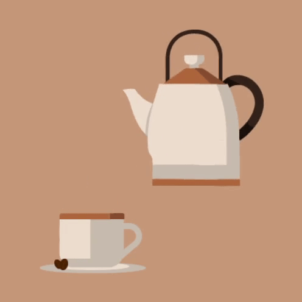

Portfolio
En samling af mine udvalgte projekter, der viser mit fokus på detaljer, kreativitet og design.


Projekt 2
Illustration til en brandingkampagne.

Projekt 3
Visuel identitet til en NGO.

Projekt 4
Infografik til en rapport.

Projekt 5
Digitalt portræt, der fremhæver stil og farver.

Projekt 6
Kreativ layout til en printmagasin.
Projekt 4
Infografik til en rapport.
Projekt 5
Digitalt portræt, der fremhæver stil og farver.
Projekt 6
Kreativ layout til en printmagasin.